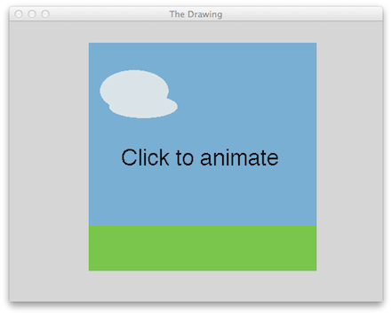
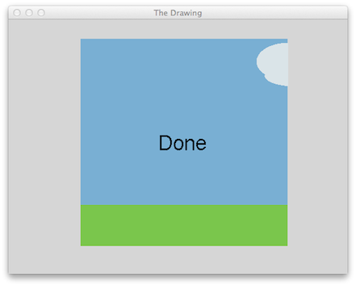

The objective of this lab is to give you practice with defining and using functions. In addition, you will be introduced to the GoGoGraphics library. In the process you will also review loops and if-else statements.
Write Python scripts as specified, that implement the requirements shown below. All work is to be done individually. If you receive assistance from anyone other than me, you must indicate this in your submission. Copying someone else's code or providing someone with your code to copy is not permitted.
Comments: Use comments as specified in lab 2.
IMPORTANT: Before starting the tasks below, visit the GoGoGraphics package page, and spend some time getting familiar with it.
Write a Python script called animate.py to animate a fluffy cloud drifting across the sky using the GoGoGraphics library.
When your script runs it should display an image to the user that looks roughly like figure 1 below, with green grass, a blue sky, a light-grey fluffy cloud, and the message “Click to animate.”

Figure 1: Initial view of the floating cloud.
When the user clicks anywhere on the image, the “Click to animate” message should disappear and the cloud should begin to drift smoothly across the picture, from left to right, until it is somewhere near the right-hand edge. The animation should take about two seconds to complete. It should then stop, and the message “Done” should appear on the screen. The final state of the screen should look something like figure 2.

Figure 2: Final view of the floating cloud.
A person’s body mass index is calculated by taking their weight in kilograms divided by their height in metres, squared. For people of average physique a BMI in the range of 19–25 (inclusive) is generally considered healthy. Below 19 is considered underweight, above 25 overweight.
Inside a Python script called bmi-assessment.py, do the following:
Write a Python function called bmi that expects to receive a weight in kg and height in cm and returns the corresponding BMI. Test the function to ensure it works correctly.
Write a Python function called assessment that expects to receive a BMI and returns one of the strings “healthy”, “overweight” or “underweight” depending on the BMI value received. Test the function to ensure it works correctly.
Below the functions, write Python code that requests the user to provide a weight in kg and a height in cm, calls the bmi function to compute the BMI, calls the assessment function to determine a weight range, and then displays all four pieces of this information appropriately, something like this:
Someone 164 cm tall and weighing 60 kg has a BMI of 22.3 which is considered healthy.
A year is a leap year if it is divisible by 4, unless it is a century year that is not divisible by 400 (e.g., 1800 and 1900 were not leap years, but 1600 and 2000 were).
Inside a Python script called leap.py, do the following:
Prepare a zipped file (.zip) of your three python files (only the 3 python files - not the entire project!), and name it lab3_lastname.zip. Submit the zipped file in Moodle by Monday October 16th at 11:59pm.